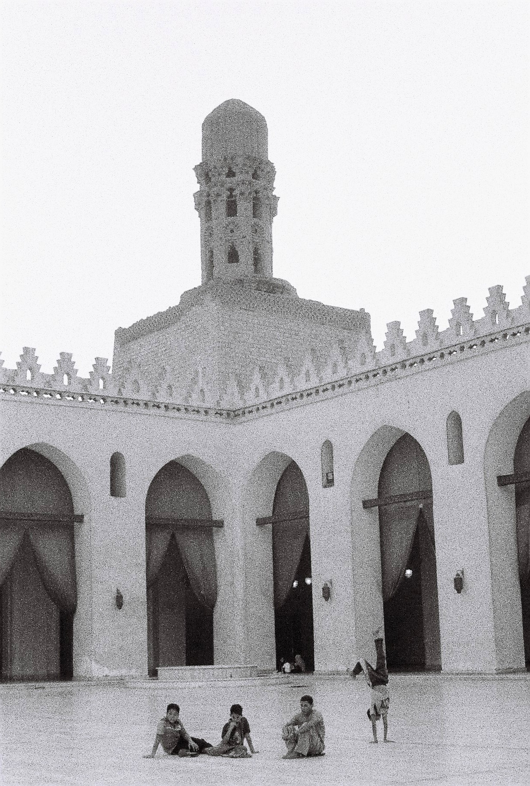
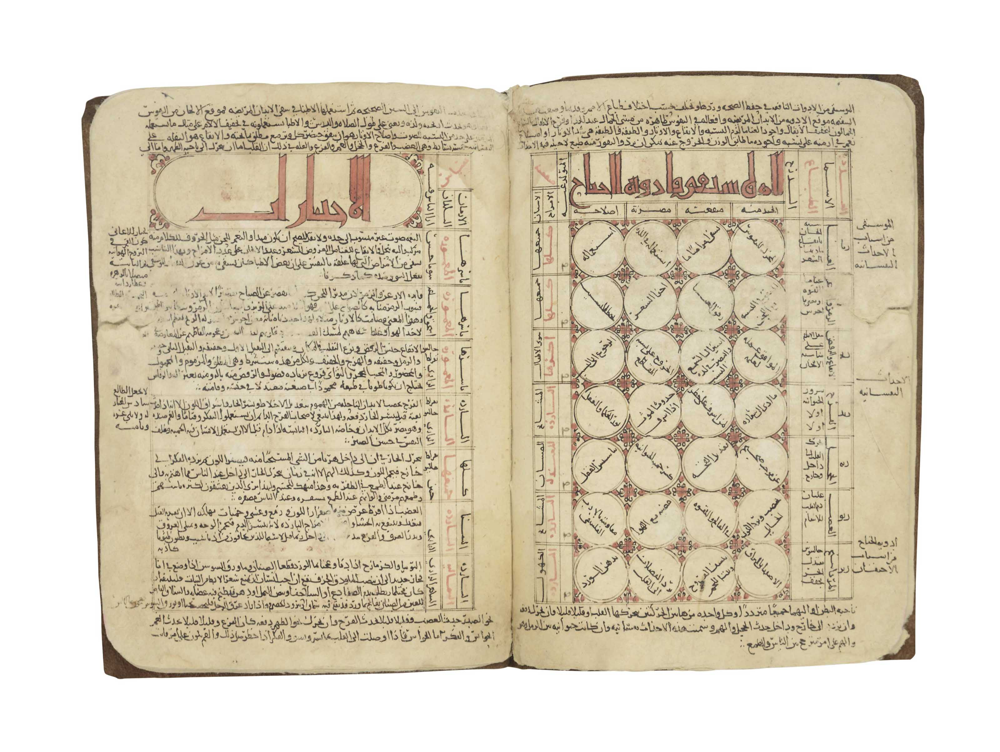

1 · خريطة corpus قبل التأويل
رسائل الحكمة corpus ديني مركّب يعود إلى القرن 11، وتفهرسه المكتبات الحديثة في 111 رسالة موزعة تقليدياً على ستة مجلدات. لا يعني وجود corpus واحد أن كل رسالة كتبها مؤلف واحد أو في لحظة واحدة؛ لذلك يجب ربط كل دعوى بعنوان الرسالة، مؤلفها المنسوب، وتاريخها قدر الإمكان.
حمزة بن عليالمحور المؤسس في الدعوة المبكرة، وتنسب إليه مجموعة واسعة من الرسائل والتقليدات.
إسماعيل التميميمرتبط بالحد الثاني/«النفس» في بنية الحدود، وتظهر علاقته مباشرة في «سجل المجتبى».
بهاء الدين المقتنىمن أبرز مؤلفي الرسائل المتأخرة، وله دور مهم في مرحلة استمرار الدعوة بعد غياب الشخصيات الأولى.
2 · الاكتشاف النصّي الأهم: «رسالة الغيبة» وأهل جزيرة الشام
فهرس مخطوطات معهد دراسات الثقافة الشرقية بجامعة طوكيو يسجل رسالة بعنوان «رسالة الغيبة» وينسبها إلى حمزة بن علي. الوصف الفهرسي يوضح أنها رسالة تحذير وصلت بعد الغيبة بعدة أشهر وأنها خُصّت بـ«أهل جزيرة الشام».
هذه الإشارة مهمة لأنها تثبت أن الشام واردة داخل توصيف الرسالة نفسها، لكنها لا تسمح بتحويل «الشام» إلى قرية Chaam الهولندية. القراءة المنهجية هنا: A للنص التاريخي الشامي، D فقط لأي مقارنة جغرافية حديثة.
هذا يمنحنا فرع بحث جديداً: ما المقصود اصطلاحياً بـ«جزيرة الشام» في هذه النسخة؟ وهل التعبير جزء من عنوان/وصف ناسخ متأخر أم من متن الرسالة نفسها؟ هذه أسئلة تحتاج فحص صورة المخطوط أو طبعة نقدية.
3 · «سجل المجتبى»: تصحيح نهائي
القراءة التي تعامل «المجتبى» كاسم لمخلّص مستقبلي غير دقيقة. الفهارس والمراجع التي تسرد corpus الرسائل تربط «نسخة سجل المجتبى» بإسماعيل التميمي، وبمنحه مرتبته الدينية داخل بنية الحدود.
نتيجة LuxDot: أي ربط بين «المجتبى» والمهدي أو المسيح يجب أن يبقى مقارنة لغوية من الدرجة D ما لم يظهر نص مستقل يحمّل اللقب وظيفة أخروية صريحة.
4 · شرط الإمام صاحب الكشف
فهرس المكتبة الوطنية الإسرائيلية يثبت وجود نص بعنوان «شرط الإمام صاحب الكشف» ضمن المجلد الثاني. وجود العنوان ثابت من درجة A؛ أما معنى «صاحب الكشف» ووظيفته الأخروية أو السياسية فلا يجوز استخلاصهما من العنوان وحده.
البحث التالي داخل هذا الفرع هو استخراج متن الرسالة وتحديد: هل «الكشف» مرحلة زمنية؟ مقام ديني؟ حكم اجتماعي؟ أم أكثر من معنى في آن واحد.
5 · الميثاق: «ولي الزمان»
ميثاق ولي الزمان محفوظ في مخطوطات متعددة، وتفهرسه جامعة طوكيو وتنسبه إلى حمزة بن علي. كما توجد نسخة تاريخية متأخرة من جبل لبنان عرضتها Christie’s. الميثاق مهم لأنه يضع مفهوم ولي الزمان داخل بنية التزام ديني صريحة.
«ولي الزمان» هنا لا يساوي تلقائياً «صاحب الزمان» في الاثني عشرية. التشابه في العبارة مدخل مقارنة فقط، وليس دليلاً على وحدة المفهوم.
6 · من الغيبة إلى الكشف: ما الذي نستطيع قوله؟
| المفهوم | المثبت داخل corpus/الفهارس | ما يحتاج نصاً إضافياً | الدرجة |
|---|
| الغيبة | عنوان رسالة مستقل وسياق تاريخي بعد اختفاء الحاكم | طبيعة العودة وعلاماتها | A → D |
| الكشف | عنوان «شرط الإمام صاحب الكشف» وعناوين كشف الحقائق | هل هو ظهور أخروي أم وظيفة باطنية | A → B/D |
| ولي الزمان | ميثاق مستقل محفوظ مخطوطاً | مقارنته بصاحب الزمان الشيعي | A → D |
| المجتبى | إسماعيل التميمي ضمن الحدود | أي معنى مخلّصي مستقل | A |
| القيامة/البعث | مفردات حاضرة في التفسير الديني الأوسع | الدلالة الدقيقة في كل رسالة | B → D |
7 · فرع بصري: القاهرة والحاكم بأمر الله

مسجد الحاكم بأمر الله في القاهرة. صورة Bekriah Mawasi، منشورة بترخيص CC BY-SA 4.0 عبر Wikimedia Commons. المكان يثبّت البحث في سياقه الفاطمي المصري بدل تحويله مباشرة إلى جغرافيا رمزية حديثة.
لماذا هذه الصورة مهمة؟
الحاكم بأمر الله شخصية تاريخية فعلية من الدولة الفاطمية في القاهرة، واختفاؤه سنة 1021 هو الخلفية التاريخية التي لا يمكن فهم خطاب الغيبة الدرزي من دونها. إدخال المكان بصرياً يساعد على فصل التاريخ عن الإسقاط الرمزي.
الموقع أيضاً يذكّر بأن بعض الرسائل الأولى تتحرك بين مصر والشام ضمن شبكة دعوة فعلية في القرن 11، لا ضمن خريطة نبوءية معاصرة.
8 · مصفوفة المقارنة الكبرى
| المحور | رسائل الحكمة | ابن عربي/المهدوية | المسيحية | اليهودية | حكم LuxDot |
|---|
| الغيبة | رسالة مستقلة وسياق اختفاء تاريخي | غيبة/ظهور في بعض التقاليد الشيعية، وانتظار المهدي في مدونات أخرى | العودة الثانية للمسيح بنية انتظار مختلفة | انتظار المسيح لا يقوم عادة على غيبة شخصية تاريخية مماثلة | D عند تحويل التشابه إلى هوية واحدة |
| الكشف | مفهوم نصّي مهم | الظهور والتجلي والكشف الصوفي | Revelation / Parousia ليستا مصطلحاً واحداً | كشف/وحي ومسيحانية ضمن أطر مختلفة | B للمقارنة المفهومية، D للتطابق |
| ولي الزمان | ميثاق مستقل | «صاحب الزمان» تشابه لغوي مغرٍ لكنه غير كافٍ | لا مقابل اصطلاحي مباشر | لا مقابل اصطلاحي مباشر | D |
| القيامة | تحتاج تفسيراً باطنياً داخلياً | القيامة الإسلامية + قراءات صوفية | قيامة الأموات والحساب | תחיית המתים في تيارات يهودية | المقارنة مفيدة، الهوية غير مثبتة |
9 · فرع «الشام»: ماذا نبحث بعد الآن؟
لغوياًتتبع صيغة «أهل جزيرة الشام» في النسخ المختلفة: هل بقيت ثابتة؟
تاريخياًتحديد الجماعات المقصودة بالرسالة ومراكز الدعوة في بلاد الشام في تلك اللحظة.
مقارنياًمنع أي انتقال إلى Chaam الهولندية قبل وجود جسر مستقل غير تشابه اللفظ.
10 · شبكة الحدود الخمسة
لأن «المجتبى» لا يُفهم منفرداً، تحتاج المرحلة القادمة إلى رسم شبكة الحدود الخمسة بأسمائها وأدوارها وألقابها كما تظهر داخل الرسائل. هذا أكثر فائدة من البحث عن أسماء مخلّصين منفصلة، لأنه يكشف بنية السلطة والمعنى داخل النص نفسه.
لن نستخدم أسماء الحدود كمعادلات تلقائية لشخصيات في ديانات أخرى؛ أي تشابه سيبقى في طبقة المقارنة.
11 · ما لا نستطيع قوله حتى الآن
لا يوجد أساس كافٍ للقول إن رسائل الحكمة تتنبأ بشخص معاصر بعينه، أو أن «المجتبى» مهدي مستقبلي، أو أن «أهل جزيرة الشام» يشيرون إلى Chaam في هولندا، أو أن «ولي الزمان» هو نفسه «صاحب الزمان» في مذهب آخر. هذه ليست نتائج؛ هي فقط أسئلة مقارنة محتملة.
المعيار الجديد للعقدة: كل ادعاء أخروي مهم يجب أن يُربط برقم رسالة، مخطوط/طبعة، سياق، ثم تفسير أكاديمي قبل إدخاله في مصفوفة LuxDot.
13 · اكتشاف حاسم: «الإمام القائم المنتظر» موجود في شاهد مخطوط
ظهر في فهرس Biblissima/BnF شاهد مخطوط مهم جداً: Arabe 7022، مؤرخ إلى القرنين 14–15، ويحتوي مقتطفات من المجلد الثالث من رسائل الحكمة. ويسجل الفهرس في الأوراق 3v–4v عنواناً صريحاً: «رسالة السفر إلى السادة في الدعوة لطاعة ولي الحق الإمام القائم المنتظر».
هذه أول نقطة في هذا المسار تسمح لنا بإثبات اجتماع الألفاظ ولي الحق + الإمام + القائم + المنتظر في شاهد مخطوط مفهرس، لا بمجرد صفحة تفسيرية حديثة.
لكن: المخطوط نفسه متأخر عدة قرون عن نشأة الدعوة، وهو «مقتطفات» من المجلد الثالث. لذلك درجة الإثبات A تخص وجود العبارة في الشاهد المخطوط، لا إثبات تاريخ صياغتها في القرن 11 ولا مساواتها آلياً بالمهدي الاثني عشري أو المسيح.
14 · «قائم الزمان» ليس مجرد تعبير عابر
وصف حديث لمخطوطات رسائل الحكمة في Gazette Drouot يلفت إلى أن تواريخ تحرير بعض الرسائل تُكتب بحسب تقويم يسمى «سنين قائم الزمان»، وتربط بداية هذا العدّ بسنة 1017، سنة إعلان الدعوة إلى التوحيد على يد حمزة بن علي.
هذا يغيّر سؤالنا: «القائم» ليس فقط شخصية نبحث عنها في آخر الزمان؛ اللفظ يدخل أيضاً في بنية الزمن والتأريخ داخل تقليد المخطوط. لذلك يجب فصل «قائم الزمان» التقويمي عن «الإمام القائم المنتظر» قبل محاولة دمجهما.
15 · تصحيح جديد لـ«صاحب الكشف»
فهرس Daiber في جامعة طوكيو لا يكتفي بعنوان «شرط الإمام صاحب الكشف»، بل يصف النص بأنه يتناول قواعد في قانون الزواج. هذا يمنعنا من قراءة كلمة «الكشف» وحدها كإعلان عن ظهور أخروي.
ترقية منهجية: العنوان A، ووظيفة النص الاجتماعية/الزواجية A بحسب الفهرس. أمّا تحويل «صاحب الكشف» إلى مخلّص يظهر في آخر الزمان فيحتاج دليلاً آخر من المتن، ويبقى D حالياً.
16 · خمسة حدود: من الأسماء إلى البنية الكونية
فهرس Daiber يسجل نص «ذكر معرفة الإمام وأسماء الحدود العلوية روحاني وجسماني»، ويذكر الأسماء الجسمانية لحمزة بن علي ودعاته: إسماعيل التميمي، محمد بن وهب القرشي، سلامة بن عبد الوهاب، وبهاء الدين المقتنى. كما تسجل رسالة التميمي «الشمعة» خمس جواهر/مراتب: الإرادة، المشيئة، الكلمة، السابق، التالي.
حمزة بن عليمركز بنية الإمامة/الحدود في النصوص المبكرة.
إسماعيل التميميالمجتبى؛ لا مخلّص مجهول، بل شخصية تاريخية محددة داخل الشبكة.
الدعاة الآخرونمحمد بن وهب، سلامة بن عبد الوهاب، وبهاء الدين: شبكة أشخاص ومقامات يجب قراءتها كوحدة.
المرحلة القادمة النصية يجب أن تميّز بدقة بين قوائم «الحدود» و«الجواهر الخمسة» وألوان الرمز الحديثة؛ التشابه العددي لا يكفي وحده لدمج القوائم.
17 · مخطوط «ميثاق ولي الزمان» كجسم مادي

صفحتان من مخطوط درزي من جبل لبنان، أواخر القرن 17/بدايات 18، عرضته Christie’s تحت عنوان Mithaq Wali al-Zaman. نستخدم الصورة كشاهد كوديكولوجي على انتقال النص وزخرفته، لا كدليل مستقل على كل تفسير عقدي.
ماذا تضيف الصورة؟
تُظهر أن النص لم ينتقل ككلمات مجردة فقط، بل ضمن تقليد مخطوط مزخرف ذي جداول ودوائر وعناوين ملوّنة. وهذا يفتح فرعاً جديداً في LuxDot: كوديكولوجيا رسائل الحكمة — الألوان، الجداول، ترتيب الرسائل، علامات الناسخ، وتواريخ النسخ.
كما أن وجود نسخ متأخرة يفرض التمييز دائماً بين تاريخ تأليف الرسالة وتاريخ المخطوط الذي وصلنا.
18 · شجرة الأدلة: من 1017 إلى المخطوطات المتأخرة
1017بداية الدعوة/العدّ المرتبط بـ«قائم الزمان» بحسب أوصاف مخطوطية حديثة؛ نقطة تأسيس تاريخية تحتاج مقابلة مع الطبعة النقدية.
1021اختفاء الحاكم بأمر الله؛ خلفية مركزية لتكوّن خطاب الغيبة.
بعد الغيبة«رسالة الغيبة» بوصفها تحذيراً موجهاً إلى أهل جزيرة الشام في فهرس Daiber.
القرن 14–15BnF Arabe 7022 يحفظ عبارة «ولي الحق الإمام القائم المنتظر» في مقتطفات من المجلد الثالث.
القرن 17–18شواهد مخطوطة مزخرفة لرسائل الحكمة و«ميثاق ولي الزمان» تكشف تاريخ انتقال النص.
2007Daniel De Smet ينشر طبعة نقدية وترجمة مشروحة للمجلدين 1 و2، وهي المرجع الأقوى لضبط نصوص حمزة والتميمي المبكرة.
19 · الفرق بين ثلاثة ألفاظ متشابهة
| اللفظ | موضعه الحالي | ما نعرفه |
|---|
| ولي الزمان | ميثاق مستقل | صيغة عهد/التزام ديني |
| قائم الزمان | تقويم/سنين في وصف المخطوطات | يدخل في حساب الزمن، لا يكفي وحده لتعريف شخصية أخروية |
| الإمام القائم المنتظر | BnF Arabe 7022 | لقب مركب صريح في عنوان رسالة محفوظة ضمن مقتطفات المجلد الثالث |
هذه الألفاظ يجب ألا تُدمج في خانة واحدة قبل فحص المتون. التشابه بينها الآن أصبح موضوع بحث لا «نتيجة».
20 · المقارنة مع المهدوية: أين صار الرابط أقوى؟
وجود عبارة «الإمام القائم المنتظر» يجعل المقارنة المعجمية مع تقاليد «القائم/المهدي المنتظر» أقوى بكثير من الاعتماد على «المجتبى» أو «صاحب الكشف». لكن هذا ما يزال لا يثبت أن النظامين يتحدثان عن الشخص نفسه.
في LuxDot نرفع الآن قوة التشابه اللغوي من ضعيف إلى قوي، بينما تبقى فرضية وحدة الهوية عند D. الفرق بين الاثنين جوهري.
21 · الطبعة النقدية التي يجب أن تصبح مرجع العقدة
فهرس BnF وGoogle Books يوثقان عمل Daniel De Smet الصادر عن Peeters سنة 2007: Les Épîtres sacrées des Druzes: Rasāʾil al-Ḥikma, volumes 1 et 2، في 772 صفحة، مع مقدمة عقائدية، جرد ووصف للمخطوطات، نقد نصي، النص العربي، وترجمة فرنسية مشروحة.
من الآن فصاعداً: عندما يوجد اختلاف بين نسخة إنترنت متداولة وبين De Smet للمجلدين 1–2، تُعطى الأولوية للطبعة النقدية. أما المجلد الثالث وما بعده فيلزم شاهد مخطوط/دراسة متخصصة مستقلة.
22 · أسئلة البحث المفتوحة بعد Deepening III
القائم المنتظرمن مؤلف الرسالة في Arabe 7022؟ وهل العنوان موجود في شواهد أقدم؟ وما متن الدعوة إلى طاعته؟
الغيبةهل الغائب في «رسالة الغيبة» هو حمزة في سياقها المباشر، الحاكم، أم أن طبقات الغيبة متعددة؟ وصف Daiber يشير صراحة إلى اختفاء حمزة في سياق الرسالة ويجب عدم دمجه آلياً بغيبة الحاكم.
التقويمجمع أمثلة مؤرخة بصيغة «سنين قائم الزمان» وتحويلها إلى خط زمني مضبوط.
الكشفقراءة متن «شرط الإمام صاحب الكشف» بدل الاستدلال من عنوانه.
الشامتحديد مراكز المخاطَبين تاريخياً في «جزيرة الشام» من مصادر القرن 11.
الكوديكولوجيامقارنة BnF وBerlin وSt Petersburg وPennsylvania: ترتيب الرسائل، الألوان، الجداول، والاختلافات.
12 · المصادر الأساسية لهذه المرحلة
A · جامعة طوكيو / فهرس Daiber للمخطوطات العربية — يوثق «رسالة الغيبة» ووصفها بأنها تحذير بعد الغيبة بعدة أشهر وخاص بأهل جزيرة الشام، كما يفهرس «ميثاق ولي الزمان».
A · المكتبة الوطنية الإسرائيلية — فهرس مخطوط المجلد الثاني، وفيه «شرط الإمام صاحب الكشف» وتسلسل عدد من الرسائل.
A/B · المكتبة الوطنية الفرنسية — مدخل إلى المخطوطات الدرزية وتاريخ corpus رسائل الحكمة.
A · Christie’s — وصف مادي لمخطوط «ميثاق ولي الزمان» من جبل لبنان، أواخر القرن 17/أوائل 18.
B · Brill — Nejla M. Abu-Izzeddin, The Druzes، مرجع تاريخي واسع للسياق الديني والاجتماعي.
صورة · Wikimedia Commons — مسجد الحاكم بأمر الله، Bekriah Mawasi، CC BY-SA 4.0.
A · BnF/Biblissima Arabe 7022 — شاهد من القرنين 14–15 يتضمن «رسالة السفر إلى السادة في الدعوة لطاعة ولي الحق الإمام القائم المنتظر».
B · BnF / Daniel De Smet 2007 — توثيق الطبعة النقدية للمجلدين 1 و2، 772 صفحة.
A/B · Gazette Drouot 2026 — وصف مخطوطات رسائل الحكمة، بما فيه التأريخ بصيغة «سنين قائم الزمان» والبنية اللونية.
العودة إلى سماء الأبحاثأطلس المخلّصمصفوفة المهديالحلاجالمكتبة
19 · القائم المنتظر: من العنوان إلى شبكة الرسائل
الشاهد الأقوى هنا ليس تشابهاً اصطلاحياً حديثاً، بل فهرسة مخطوط BnF Arabe 7022 (القرنان 14–15) التي تحفظ عنوان «رسالة السفر إلى السادة في الدعوة لطاعة ولي الحق الإمام القائم المنتظر». وتصف المخطوطة أيضاً دائرةً فيها أسماء ستة سادة. كما تفهرس المكتبة الوطنية الإسرائيلية العنوان نفسه ضمن مجموعة رسائل المقتنى، ما يقوّي ثبوت العنوان في تقليد المخطوطات.
قاعدة القراءة: ثبوت عبارة «القائم المنتظر» = A. أمّا مساواتها آلياً بمهدي الحديث أو المسيح اليهودي/المسيحي = D إلى أن يثبت النص الوظيفة والهوية والسياق.
20 · من هو «القائم» هنا؟
المصادر الثانوية تنسب «رسالة السفر» إلى بهاء الدين المقتنى وتربط «قائم الزمان» بحمزة بن علي، لكن هذا التفصيل يحتاج تثبيتاً من متن الرسالة أو طبعة نقدية قبل رفعه إلى درجة A. لذلك نسجله حالياً B/C لا حقيقة مخطوطية مباشرة.
وهذا يغيّر سؤال LuxDot من «هل ظهر لقب يشبه المهدي؟» إلى: ما الوظائف التي يسندها corpus إلى حمزة، الحاكم، ولي الزمان، قائم الزمان، والإمام القائم المنتظر؟ وهل تتطابق هذه الألقاب أم تتجاور فقط؟
23 · نتيجة Deepening IV
المادة الجديدة تسمح بالقول بثقة إن لغة الانتظار والقائم ليست إسقاطاً خارجياً بالكامل على corpus الدرزي؛ لدينا عنوان مخطوط صريح. لكن البحث الأقوى الآن هو تحليل شبكة الألقاب والوظائف، لا مطاردة كلمة منفردة. الأولوية القادمة: الحصول على صور الأوراق 3v–4v من Arabe 7022 وقراءة متن «رسالة السفر» نفسه، ثم مقابلة ألفاظه مع الرسائل 67 و68 و90 و97 بحسب الفهارس المتداولة.